Kırtasiye ve kitapçılar için raf takip ve kitap bulma sistemi
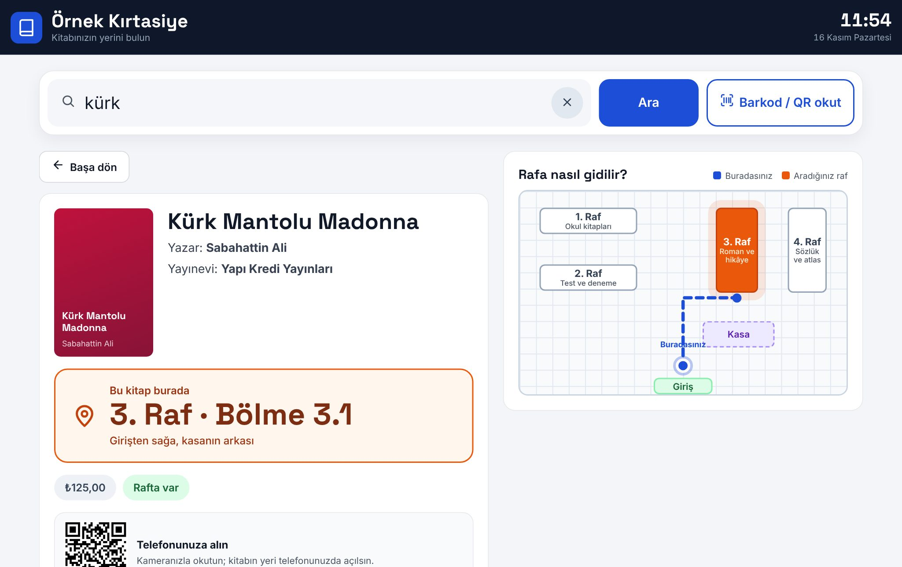
BelgeProje dokümanı ve kullanım özeti
Tarih18 Kasım 2026
Sürüm1.1 · ekran görüntüleri örnek verilerle hazırlanmıştır
İçindekiler
1. Sistem ne işe yarar?
2. Müşteri ekranı
3. Yönetim paneli
4. Kullanıcılar ve yetkiler
5. Altyapı, güvenlik ve kişisel veriler
6. Kurulum ve teslim
7. Donanım seçenekleri
8. Bilinen sınırlar ve sonraki adımlar
1
Sistem ne işe yarar?
Kırtasiyede en sık sorulan soru “Bu kitap nerede?” sorusudur. Kitabım Hangi Rafta? bu soruyu personele gerek kalmadan yanıtlar. Mağazadaki raflar ve bölmeler (1.1, 1.2, 2.3 …) programa bir kez tanımlanır, kitaplar barkod okutularak ya da elle bölmelere eklenir. Müşteri dükkândaki ekranda kitabın adını yazar ya da barkodunu okutur; program kitabın hangi raf ve bölmede olduğunu söyler, mağaza haritasında oraya giden yolu gösterir.
Müşteri içinKitabını kendisi bulur, okul listesindeki kitapları tek ekranda görür, olmayan kitap için “gelince haber ver” der.
Personel içinBarkodu okutunca kitap bilgileri kendiliğinden dolar; yalnız rafı seçip kaydeder. Toplu yükleme Excel’den yapılır.
Yönetici içinRaflar, harita, kullanıcılar ve yetkiler; en çok aranan ve aranıp bulunamayan kitapların raporu; işlem geçmişi.
Sistem bir web uygulamasıdır: uygulama mağazası gerektirmez, dükkândaki dokunmatik ekranda, bilgisayarda, tablette ve telefonda tarayıcıdan açılır. İstenirse tablete ve telefona simgesiyle uygulama olarak kurulur: müşteri ekranı tam ekran “Kitabım Nerede”, yönetim paneli “Raf Yönetimi” adıyla ana ekrana eklenir. Veriler bulutta tutulur; personelin telefonundan eklenen kitap aynı anda müşteri ekranında görünür.
2
Müşteri ekranı
Dükkândaki ekranda açık duran, giriş gerektirmeyen ekrandır. Dokunmatik kiosk modunda Türkçe ekran klavyesi açılır; 90 saniye dokunulmazsa başlangıca döner.
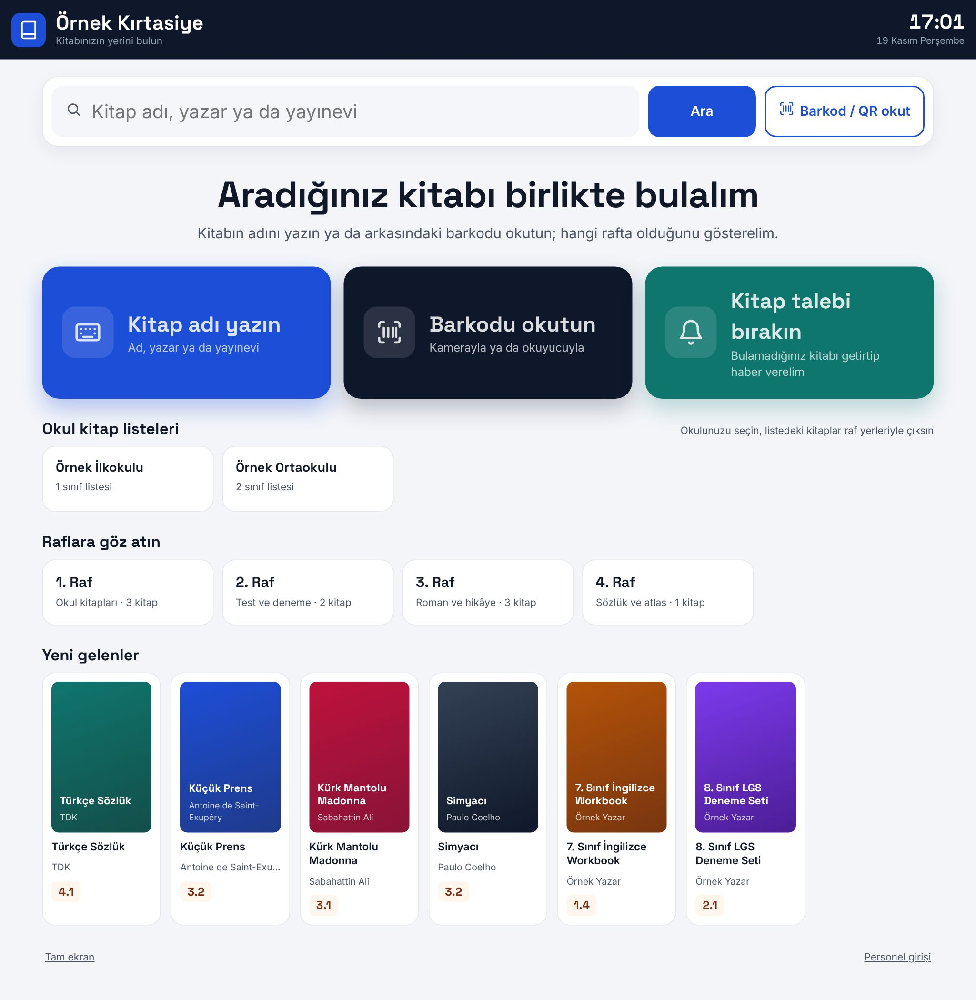
Karşılama: kitap adı yazma ve barkod okutma, okul kitap listeleri, raflara göre gezinme, yeni gelen kitaplar. Logo, renk ve karşılama yazısı mağazaya göre değiştirilebilir.
Arama sonucu ve mağaza haritası
Ad, yazar, yayınevi ya da barkodla arama; Türkçe harf ve büyük-küçük harf farkı önemsizdir.
Kitabın kapağı, bilgileri, büyük harflerle raf ve bölme, yön tarifi (“Girişten sağa, kasanın arkası”), fiyat ve stok durumu (Rafta var / Son 2 adet / Tükendi).
Mağaza haritası: “Buradasınız” noktasından aranan rafa giden yol çizilir, hedef raf yanıp söner. Haritası çizilmemiş mağazada raf şeması gösterilir.
Telefonunuza alın: müşteri QR’ı okutunca kitabın yeri kendi telefonunda açılır.
Arama sonucu: kitap bilgileri, raf/bölme, yön tarifi ve haritada yol.
Yazım hatasına dayanıklı arama
Müşteri “kurk mantolu madona” gibi hatalı yazsa da sistem “Bunu mu demek istediniz?” diyerek doğru kitabı önerir. Kitap mağazada yoksa “Gelince haber verilsin” düğmesi çıkar.
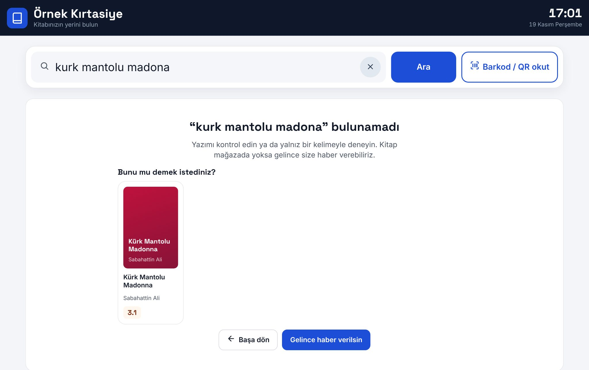
Bulunamayan aramada öneriler ve “gelince haber ver”.
Okul kitap listeleri Sezonun en çok kullanılacak özelliği
Veli okulunu ve sınıfını seçer; listedeki bütün kitaplar raf yerleri ve stok durumuyla tek ekranda çıkar. “8 kitaptan 6’sı hazır” özeti, hangi raflara gidileceği ve eksik kitaplar için tek dokunuşla “haber ver” talebi bulunur. Liste QR ile telefona alınabilir.
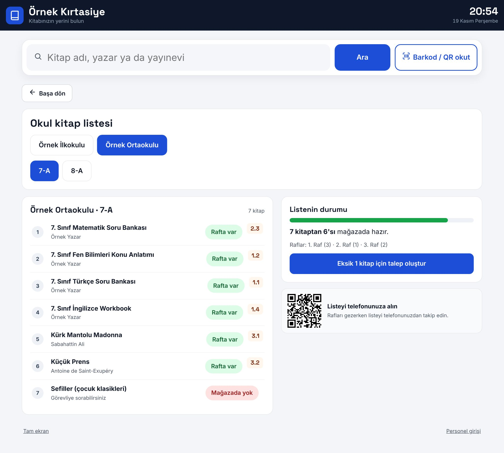
Okul → sınıf seçimi ve listenin mağazadaki durumu.
Gelince haber ver
Bulunamayan, tükenen ya da okul listesinde eksik olan kitap için müşteri adını ve telefonunu bırakır. Form, kişisel verilerin yalnız bu talep için kullanılacağına dair onay kutusu ve aydınlatma metni içerir. Talepler yönetim panelinde listelenir.
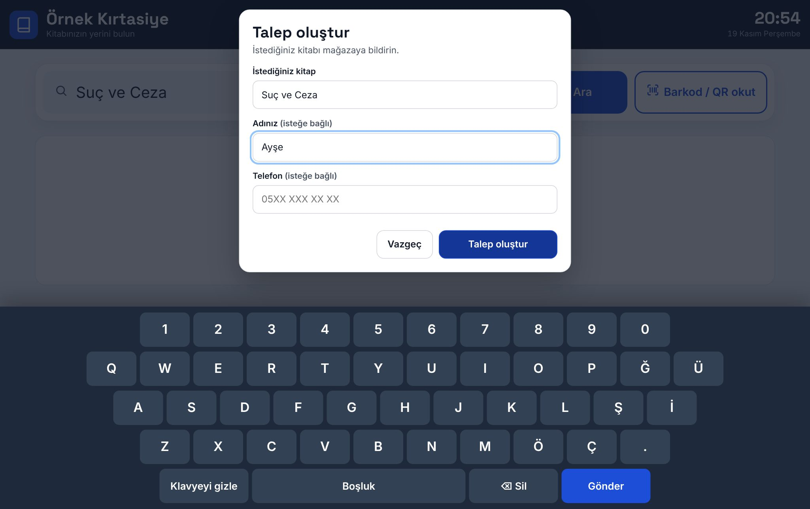
Kiosk modunda ekran klavyesiyle talep formu. Klavye açıkken form ekranın üstüne yaslanır.
Telefonda
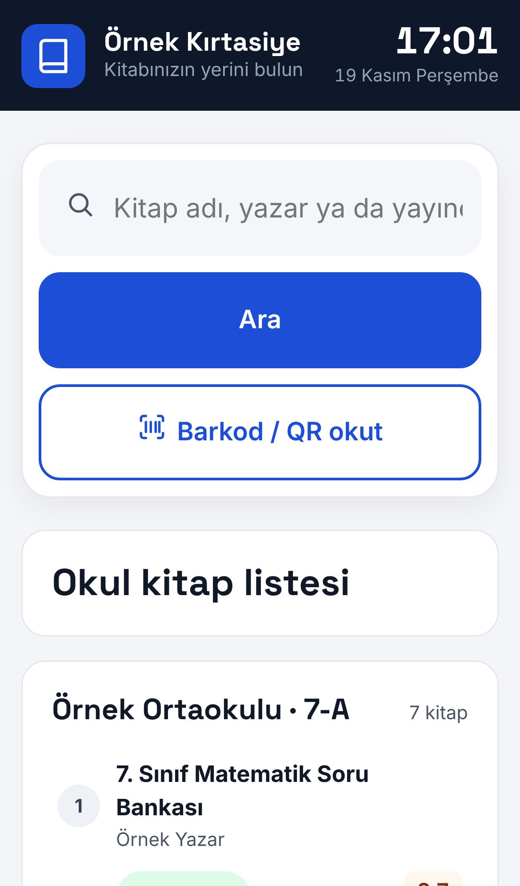
QR ile telefona alınan okul listesi.
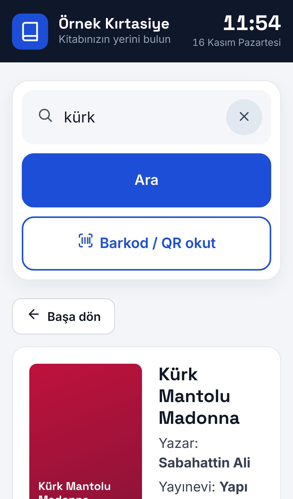
Telefonda arama sonucu.
İnternet kesilirseMüşteri ekranı son kitap listesini cihazda saklar. Bağlantı koptuğunda üstte sarı bir uyarı şeridi çıkar ve arama son listeyle çalışmaya devam eder; bağlantı gelince liste kendiliğinden güncellenir.
3
Yönetim paneli
Personelin e-posta ve şifreyle girdiği bölümdür. Menüdeki sekmeler kişinin yetkisine göre görünür (bkz. bölüm 4).
Genel bakış
Kitap, raf ve bölme sayıları, son 30 gündeki müşteri aramaları, müşterilerin en çok aradıkları, aranıp bulunamayanlar (sipariş fırsatı listesi), son eklenen kitaplar ve raf doluluğu.
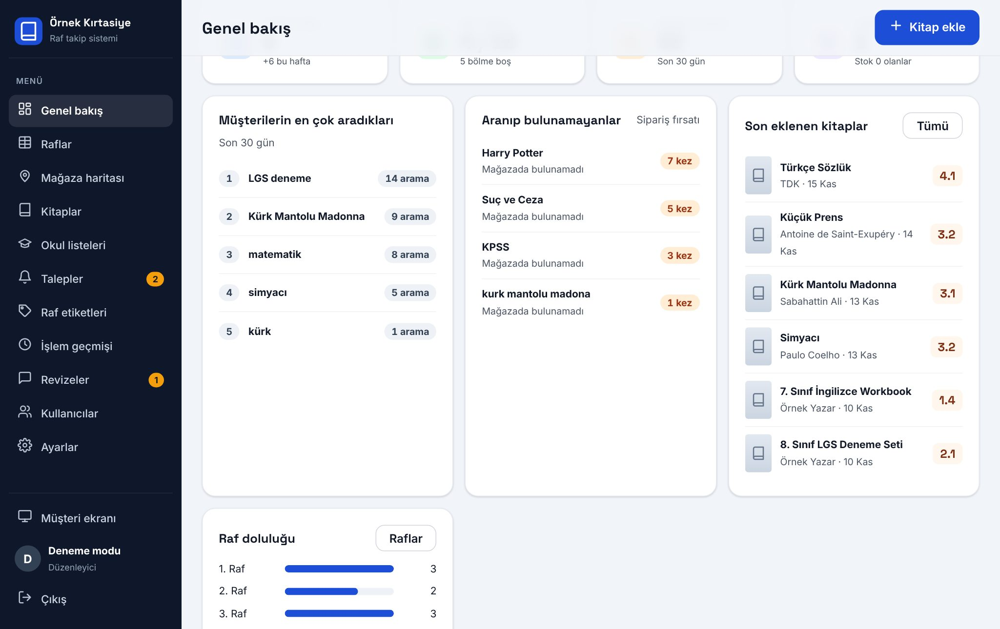
Genel bakış panosu.
Raflar ve mağaza haritası
Raflar etiketleri ve bölme sayılarıyla eklenir; bölme eklenip silinebilir. İçinde kitap olan raf ya da bölme yanlışlıkla silinemez. Bir raf silindiğinde diğerleri yeniden numaralanmaz; raflara yapıştırılmış etiketler kaymaz.
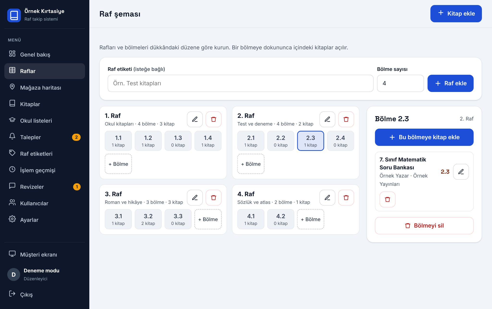
Raf şeması; seçilen bölmedeki kitaplar sağda.
Mağaza haritasında raflar kat planına sürüklenerek yerleştirilir, köşedeki tutamaçla boyutlandırılır, döndürülür; kasa, giriş ve kiosk yeri eklenir. Her rafa müşteriye gösterilecek yön tarifi yazılabilir. Üst üste binen öğeler için uyarı verilir.
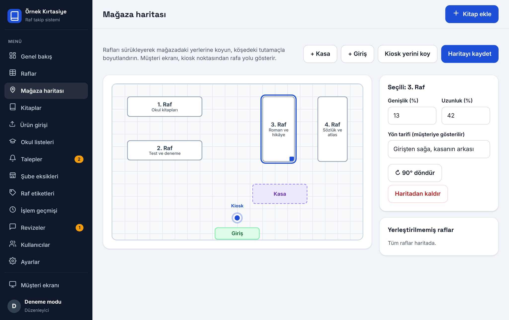
Sürükle-bırak harita düzenleyici.
Kitaplar
Arama ve rafa göre süzme yapılabilen tablo; kapak, yazar, yayınevi, konum, fiyat ve stok.
Barkoddan otomatik bilgi: kitap barkodu (ISBN) okutulunca ad, yazar, yayınevi ve kapak internetten (Google Kitaplar, yoksa Open Library) gelir; personel yalnız rafı seçip kaydeder. Raf ve bölme bir sonraki kitap için seçili kalır.
Barkod kasa tipi okuyucuyla, telefon/tablet kamerasıyla ya da barkodun fotoğrafı çekilerek okunabilir. Kamera okuması yüksek çözünürlükte çalışır; iPhone’da gerçek kitaplarla denendi.
Aynı barkod ikinci kez girilirse uyarı verir.
Excel ile toplu işlem: kitap listesi Excel’e aktarılır; Excel’den toplu yükleme yapılır, hatalı satırlar tek tek gösterilir.
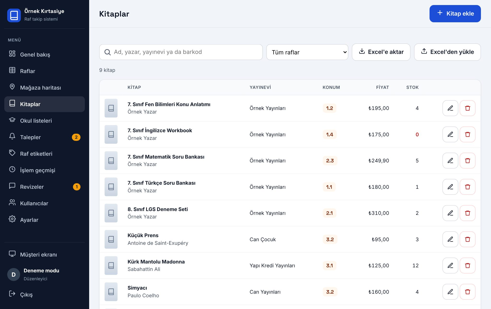
Kitap tablosu.
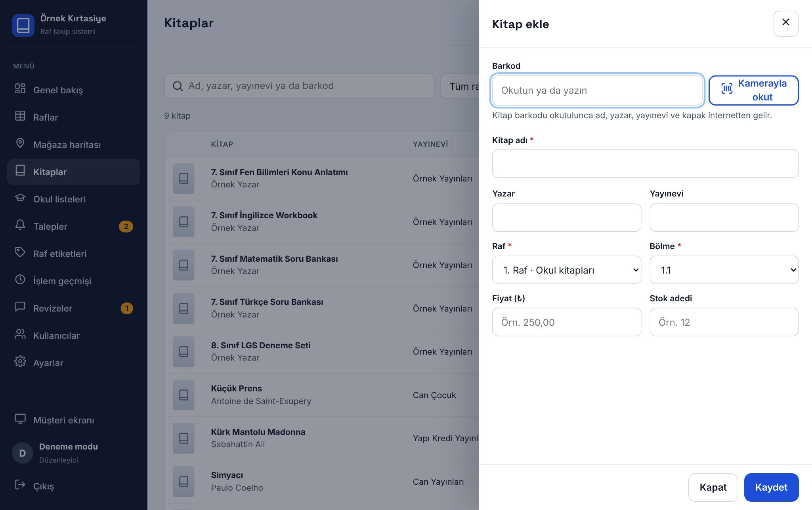
Kitap ekleme formu (yandan açılır).
Okul listeleri
Okulun yayınladığı liste olduğu gibi yapıştırılır. Program satırları mağazadaki kitaplarla otomatik eşleştirir: numaralar ve madde işaretleri temizlenir, yazım hataları tolere edilir, farklı sınıfların kitapları (7. sınıf / 8. sınıf) birbirine karışmaz. Eşleşmeyen satırlar için “Kitap ekle” düğmesi çıkar; eşleşmeler elle düzeltilebilir.
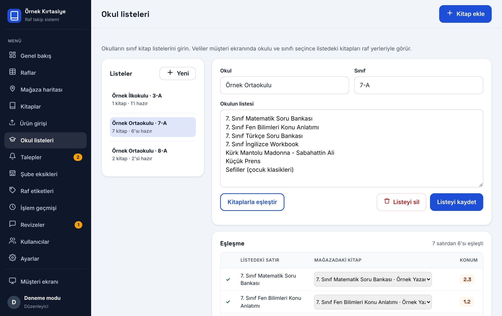
Listeyi yapıştır, eşleştir, kaydet.
Talepler
“Gelince haber ver” talepleri; kitap şu an stoktaysa bu da gösterilir. Durum (Yeni → Arandı → Geldi / İptal) güncellenir, menüde yeni talep sayacı görünür, liste Excel’e aktarılır, kapanan talepler silinir.
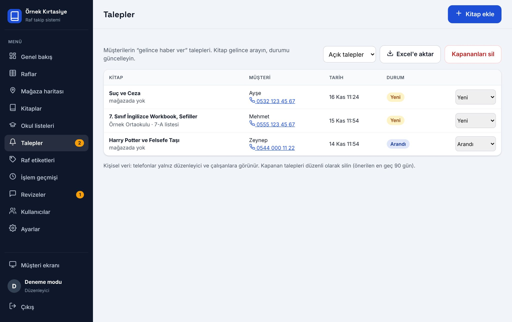
Talepler.
Şube eksik listesi Şubeler arası sevkiyat
Şubeden gelen barkodlu eksik listesi (Excel .xlsx ya da .csv) panele yüklenir. Program her kitabın mağazada hangi raf ve bölmede olduğunu bulur ve listeyi raf sırasına göre dizer; personel rafları sırayla dolaşarak kitapları toplar.
Listede bir “Barkod” sütunu olması yeter; “Adet” sütunu varsa istenen adet de okunur. Sütunlar otomatik bulunur, gerekirse elle seçilir.
Her kalem için durum: Rafta, Stok yetersiz, Stokta yok ya da Kayıtlı değil. Kayıtlı olmayan barkod tek dokunuşla kitap olarak eklenir.
Sonuç Excel olarak indirilir ya da işaretleme kutucuklu toplama listesi olarak yazdırılır.
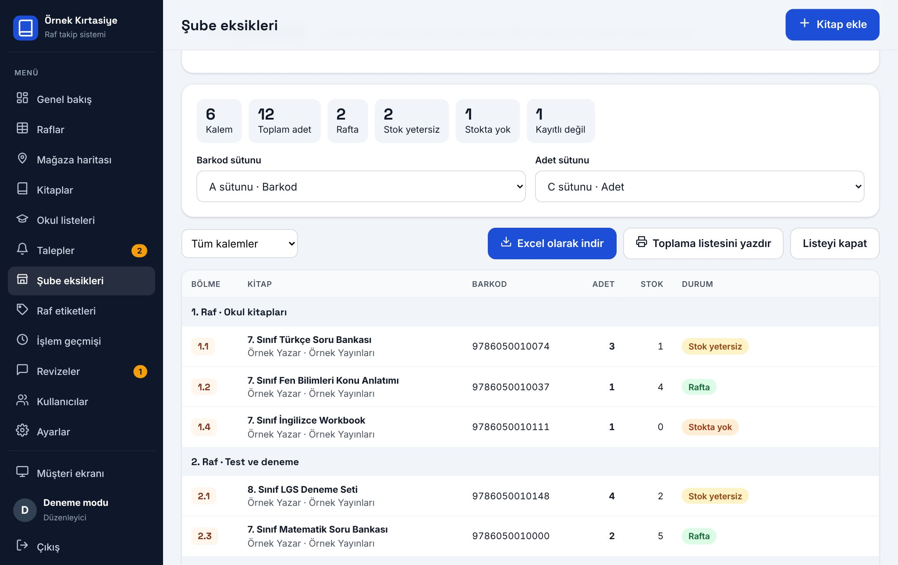
Kadıköy şubesinin eksik listesi: özet, raf raf toplama listesi ve kayıtlı olmayan kitap.
Raf etiketleri
Her bölme için mağaza adı, bölme kodu ve QR içeren etiketler yazdırılır. Müşteri ekranında etiketteki QR okutulunca o bölmedeki kitaplar listelenir.
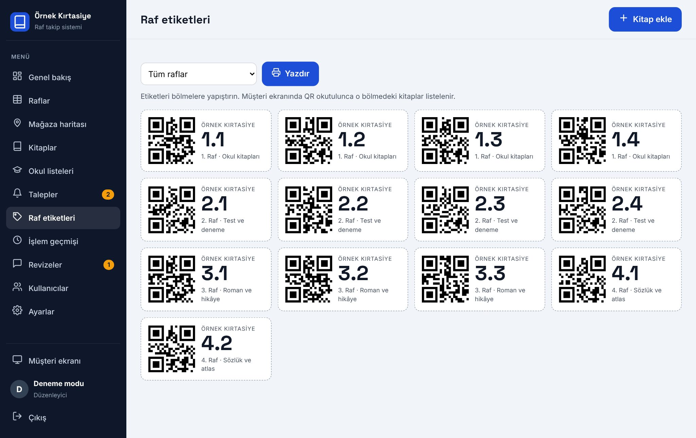
Yazdırılabilir QR’lı raf etiketleri.
İşlem geçmişi
Kimin, ne zaman, hangi kitabı eklediği, taşıdığı, güncellediği ya da sildiği; raf, okul listesi ve ayar değişiklikleri. Kayıtları veritabanı kendisi tutar; hiç kimse (yönetici dahil) değiştiremez ya da silemez.
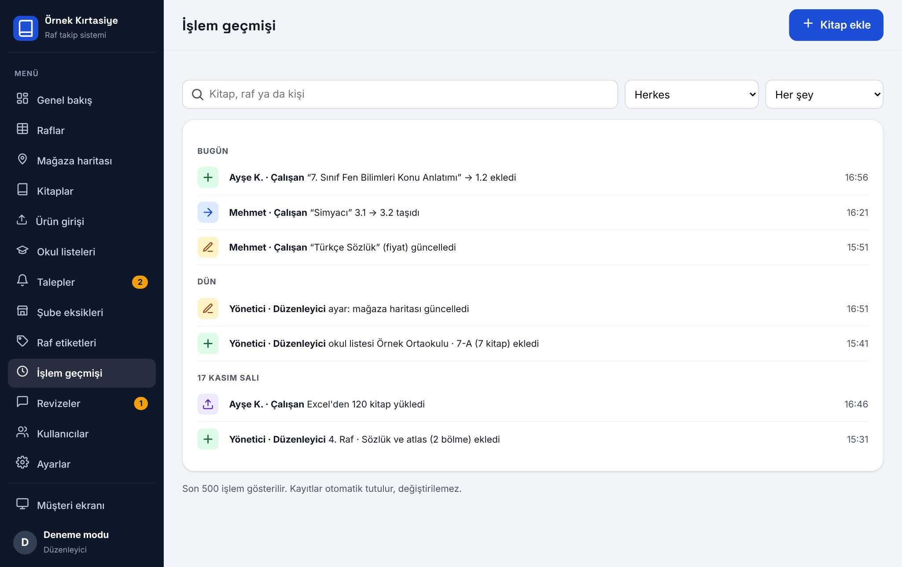
İşlem geçmişi; kişi ve konuya göre süzülebilir.
Revizeler
Müdür ya da yönetici programla ilgili isteklerini (yeni özellik, değişiklik) buraya yazar. İstekler “Yeni / İletildi / Yapıldı” olarak takip edilir; yeni istekler tek düğmeyle toplu kopyalanıp geliştiriciye iletilir.
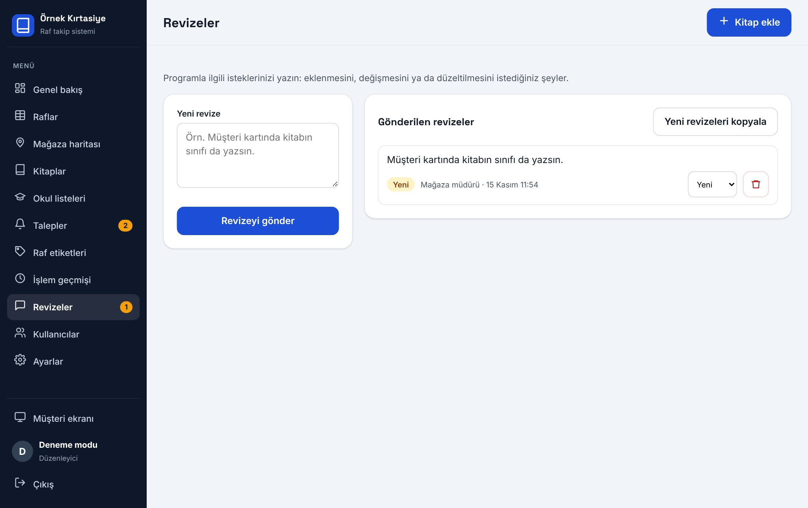
Revizeler.
Ayarlar ve görünüm
Mağaza adı, logo, ana renk (hazır renkler ya da özel renk), müşteri ekranının karşılama yazısı; fiyat ve stok alanlarının açılıp kapatılması; yedek indirme. Seçilen renk beyaz yazıyla okunmayacak kadar açıksa okunur olması için otomatik koyulaştırılır.
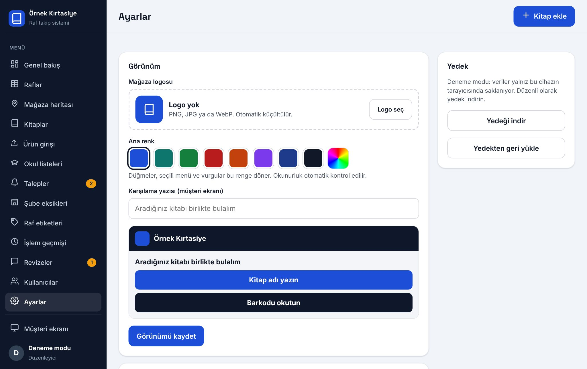
Görünüm ayarları ve canlı önizleme.
4
Kullanıcılar ve yetkiler
Kişiler Kullanıcılar sekmesinden ad, e-posta, şifre ve yetkiyle eklenir; yetki ve şifre sonradan değiştirilebilir. Son düzenleyici kaldırılamaz. Yetkiler yalnız ekranda değil, veritabanında da uygulanır: ekranı kurcalayan biri yetkisi olmayan işlemi yapamaz.
Bölüm
Düzenleyici
Revize veren (müdür)
Çalışan
Müşteri ekranı
Kitap arama, harita, okul listesi görme
Evet
Evet
Evet
Evet
Kitap ekleme, düzenleme, silme, Excel yükleme
Evet
Hayır
Evet
Hayır
Raf ve bölme yönetimi
Evet
Görür
Görür
—
Mağaza haritasını düzenleme
Evet
Hayır
Hayır
Haritayı görür
Okul listelerini yönetme
Evet
Görür
Evet
—
Talepler (müşteri telefonları)
Evet
Hayır
Evet
Yalnız talep bırakır
Şube eksik listesi
Evet
Hayır
Evet
—
Raf etiketi yazdırma
Evet
Hayır
Evet
—
Revize yazma
Evet
Evet
Hayır
—
İşlem geçmişi, arama raporu
Evet
Evet
Hayır
—
Kullanıcılar, ayarlar, görünüm
Evet
Hayır
Hayır
—
5
Altyapı, güvenlik ve kişisel veriler
Web uygulaması: sade HTML/CSS/JavaScript; kurulum ve uygulama mağazası gerektirmez. Telefon, tablet ve dokunmatik ekranda uyumlu çalışır.
Bulut veritabanı: Supabase (PostgreSQL). Değişiklikler bütün ekranlara anında yansır.
Erişim kuralları: her tablo için satır düzeyinde güvenlik (RLS). Giriş yapmamış müşteri ekranı yalnız kitapları okuyabilir, talep ve arama kaydı ekleyebilir; kimsenin telefonunu okuyamaz.
Kişisel veri (KVKK): talep formunda açık onay ve aydınlatma metni; telefonlar yalnız düzenleyici ve çalışana görünür; kapanan taleplerin düzenli silinmesi önerilir (en geç 90 gün). Arama raporunda kişisel bilgi tutulmaz.
Gizli anahtar yok: uygulamada yalnız herkese açık olması tasarlanmış anahtar bulunur; hesap açma gibi yetkili işlemler sunucu tarafındaki fonksiyonda yapılır.
Test: 43 otomatik birim testi ve her özellik için tarayıcıda uçtan uca testler. Veritabanı kurulum dosyası gerçek PostgreSQL üzerinde çalıştırılıp erişim kuralları rol rol doğrulandı.
6
Kurulum ve teslim
Veritabanı: Supabase’te proje açılır, hazır kurulum dosyası (supabase/kurulum.sql) SQL Editor’de bir kez çalıştırılır.
Yayın: uygulama dosyaları GitHub Pages (ya da benzeri) üzerinde yayınlanır; proje adresi ve açık anahtar js/ayar.js dosyasına yazılır.
İlk yönetici: yönetim paneli ilk açıldığında “İlk kurulum” ekranından yönetici hesabı oluşturulur.
Mağaza düzeni: raflar ve bölmeler eklenir, harita çizilir, logo ve renk seçilir, etiketler yazdırılıp raflara yapıştırılır.
Kitaplar: barkod okutarak ya da Excel’den toplu olarak eklenir; okul listeleri girilir.
Kiosk: dükkândaki ekranda müşteri ekranı ?kiosk=1 ile tam ekran açılır (ekran klavyesi etkin).
Tablete ve telefona kurulum: Android’de Chrome menüsünden “Uygulamayı yükle”, iPad/iPhone’da Safari’de “Paylaş → Ana Ekrana Ekle” seçilir; yönetim panelindeki “Uygulama olarak kur” düğmesi de bunu yapar. Kurulan uygulama adres çubuğu olmadan, kendi simgesiyle açılır.
Teslim paketiKaynak kodu, veritabanı kurulum dosyası, kullanıcı sunucusu, kurulum talimatı (README) ve bu doküman. Mağaza kendi Supabase hesabıyla “sıfır” veriyle teslim alır; veriler mağazaya aittir.
7
Donanım seçenekleri
Seçenek
İçerik
Not
Ekonomik
Mevcut bilgisayar ya da tablet + USB barkod okuyucu
Okuyucu klavye gibi çalışır, ek ayar gerekmez.
Orta
10 inç Android “fiyat gör” terminali
Barkod okuyucusu dahili, tezgâh üstü.
Profesyonel
21,5 inç ayaklı dokunmatik kiosk
Ekran klavyesiyle tam kiosk deneyimi.
Gösterişli
32 inç ayaklı dokunmatik kiosk
Mağaza girişine; harita büyük ve net görünür.
Personel için ek donanım gerekmez: kitap ekleme telefon kamerasıyla da yapılabilir.
8
Bilinen sınırlar ve sonraki adımlar
Bulut kurulumu (Supabase ve GitHub Pages) yapıldı, sistem canlı adreste çalışıyor. Bu dokümandaki ekranlar deneme modunda örnek verilerle hazırlandı.
Barkoddan bilgi getirme Google Kitaplar ve Open Library’ye dayanır; bazı Türkçe kitaplar bu kaynaklarda eksik olabilir. Bu durumda bilgiler elle girilir.
Canlı kamerayla barkod okuma iPhone’da doğrulandı; Android tablette ayrıca denenecek. Sorun çıkan cihazlarda “fotoğraf çekerek okut” yedeği vardır.
Excel listeleri .xlsx, eski .xls (Excel 97–2003) ve .csv olarak okunur; Excel 95 ve öncesinin biçimi okunmaz.
Talep formundaki aydınlatma metni örnektir; mağazanın kendi bilgileriyle güncellenmesi ve bir hukukçuya kontrol ettirilmesi önerilir.
İleride eklenebilecekler: şubeler arası ortak stok görünümü, SMS/WhatsApp ile otomatik “kitabınız geldi” bildirimi, satış programı entegrasyonu.